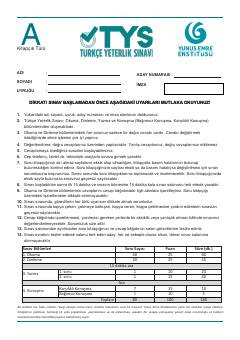

TYTürkçe Yeterlik Sınavı okuma bölümü için örnek soru ve metinleri içeren kılavuz.
Bu kitapçık Yunus Emre Enstitüsünün Türkçe Yeterlik Sınavı okuma becerisi testine hazırlananlar için örnek sorular ve metinler içermektedir. Okuma anlama becerilerini ölçmeye yönelik çeşitli metinler ve bu metinlere ait çoktan seçmeli soruları barındırır.